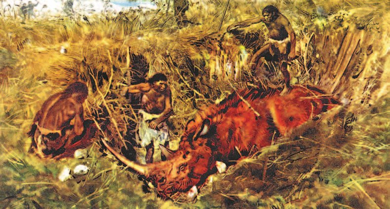
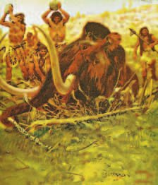
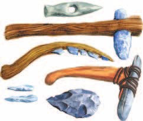
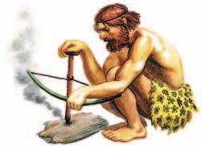
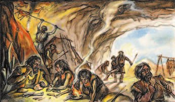
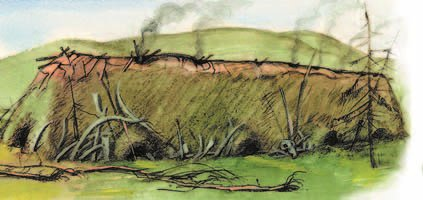
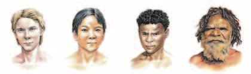

Занятия первобытного человека
Древние люди ничего не выращивали. Они брали то, что природа уже приготовила сама.
Они охотились, ловили рыбу и собирали ягоды, грибы, орехи, коренья. Такое хозяйство называют .
Так люди жили почти весь — древний каменный век, и мезолит — средний.
Хозяйство людей древнего каменного века основывалось на том, что давала им природа. Основой жизнедеятельности были охота, рыболовство, собирательство дикорастущих съедобных растений и кореньев. Такой тип хозяйства называется .
Он господствовал на протяжении почти всего древнего () и среднего (мезолит) каменного века.
Много тысяч лет люди жили в Африке, где тепло и много растений. Еда вокруг заканчивалась — люди уходили на новое место. Это и есть .
Многие тысячи лет древние люди жили в Африке, зонах тропиков и субтропиков. Климат здесь был тёплым. Разнообразие растений позволяло прокормиться, собирая ягоды, фрукты, грибы, орехи, коренья. Первобытные люди, занимаясь , меняли места обитания.
Охотиться на крупного зверя в одиночку нельзя. Одни гнали зверя, другие ждали у . Поэтому охотились все вместе.
Другим занятием была охота. Она имела большое значение в жизни первобытного человека. Охотиться на крупных животных (устраивать , загонять зверя) можно было только коллективно. Успешная охота обеспечивала людей мясной пищей.

Орудия делали из камня и дерева: , дубина, . Как их делать, показывали детям — и с каждым разом выходило лучше.
От работы руки становились ловкими, пальцы — умелыми. Мозг тоже менялся и работал лучше. А пока люди договаривались между собой, у них появилась речь.
Орудия труда (оббитые с одного конца куски гальки, грубые ручные ) и охоты (дубины, ) древние люди делали из камня и дерева. Навыки их обработки передавались из поколения в поколение и совершенствовались.
Трудовая деятельность меняла древнего человека. Руки становились более подвижными, ловкими, пальцы — более умелыми. Труд способствовал развитию мышления человека, его мозг становился более совершенным. В ходе общения с себе подобными развивалась речь.

- Какие способы охоты использовали первобытные люди?
- Почему охота была коллективным занятием?
1. Почему это хозяйство называют присваивающим, а не производящим?
2. Почему первобытные люди часто уходили с одного места на другое?
3. Как труд связан с появлением речи?
Использование огня
дал людям сразу четыре вещи: горячую еду, тепло ночью, защиту от зверей и свет в тёмной пещере.
Важным открытием первобытного человека стало использование для приготовления пищи, обогрева холодными ночами, отпугивания диких зверей, освещения тёмной пещеры.
Сначала огонь не умели добывать. Молния поджигала дерево — от него брали пламя и не давали ему погаснуть.
Под Пекином нашли пещеру, где слой золы 6 метров. Это выше двухэтажного дома. Значит, огонь там горел очень-очень долго.
Сначала человек не умел добывать огонь и непрерывно поддерживал пламя, добытое, например, от загоревшегося в грозу дерева. Археологи открыли под Пекином пещеру, где толщина слоя золы и углей от костра достигала 6 метров.
Потом человек научился : тереть деревянную палочку или высекать искры из камня. А ещё — переносить огонь с собой далеко.
Позднее человек научился , а также сохранять и переносить на большие расстояния.

- Какое значение в жизни древнего человека имел огонь?
4. Почему люди так берегли огонь, пока не научились его добывать?
5. О чём говорит слой золы в 6 метров в пещере под Пекином?
Орудия и жилище
Примерно 70 тысяч лет назад начался . Стало очень холодно.
Одни звери исчезли, другие появились — в тёплых шубах: мамонты, шерстистые носороги, бизоны, олени.
Примерно 70 тысяч лет назад начался . Климат стал более суровым. Исчезли многие виды животных, но появились другие — приспособленные к новым условиям: мамонты, шерстистые носороги, бизоны, олени.
Главным занятием стала охота. Люди научились делать копья, дротики и с острыми наконечниками — гарпуном ловили рыбу.
А ещё придумали . Копьё летит дальше, и близко к зверю подходить не надо.
Основным занятием в жизни первобытных людей стала охота. Они научились делать копья, дротики, с острыми наконечниками для ловли рыбы. позволяла охотиться с большого расстояния, не приближаясь в целях безопасности к крупному животному.
Охота давала не только еду. Из мамонта и оленьих рогов делали орудия труда. Из мелких костей — , чтобы сшивать шкуры. Получалась одежда.
Охота давала древнему человеку не только пищу. Из мамонта и оленьих рогов изготавливали орудия труда. Мелкие кости использовали в качестве для сшивания шкур животных, которые носили как одежду.
Прятались от холода и дождя в и пещерах. Потом научились строить дом сами: из костей, сверху шкуры, внутри .
Ледниковый период кончился 15—10 тысяч лет назад.
Посчитай: начался 70 тысяч лет назад, кончился 15—10 тысяч назад. Значит, люди прожили во льдах около 60 тысяч лет. Это очень долго: с тех пор как ледник ушёл, до сегодняшнего дня прошло всего около 12 тысяч лет — в пять раз меньше.
Люди укрывались от холода и дождей в и пещерах. Со временем они научились сооружать жилища. Кости крупных животных служили строительным материалом для возведения , который сверху накрывали шкурами. Внутри такого жилища устраивали . Ледниковый период закончился 15—10 тысяч лет назад.


▲ Сравни два вида жилищ первобытного человека. Назови преимущества и недостатки каждого. Аргументируй свой ответ.
- Что происходило в жизни древних людей в последний ледниковый период?
- Сравните грот и жилище из костей. У чего какие плюсы и минусы?
6. Почему огонь стал особенно нужен именно в ледниковый период?
7. Почему охотники старались не подходить близко к крупному зверю?
8. Что из добытого зверя шло в дело, кроме мяса?
9. Сколько лет длился ледниковый период? Посчитай сам.
Род и племя
Самые первые большие группы древних людей учёные называют .
Родственники, у которых общие предки, — это , или родовая община. В роду всё общее: мужчины охотились, женщины собирали, добычу делили на всех.
Взрослые собирались вместе и выбирали — самого опытного.
Несколько родов вместе — это . У племени общая земля, язык и обычаи, а главный в нём — .
Сообщества древних людей современного вида учёные называют термином «». Коллектив кровных родственников, которые происходили от общих предков, называют «» или «родовая община». Члены рода вели общее хозяйство: мужчины охотились, женщины занимались собирательством. Добыча отдельных членов рода поступала в распоряжение всего коллектива. На общем сходе взрослых членов рода выбирали , самого опытного и авторитетного человека.
Несколько родов составляли . Его возглавлял совет, в который входили старейшины родов. Племя имело общую территорию, язык, обычаи и . Им был старейшина одного из родов, входивших в состав племени.
- Что такое родовая община?
- Что предшествовало родовой общине в процессе развития человека?
10. Почему добыча одного охотника доставалась всему роду?
11. Чем старейшина отличается от вождя?
Расы
Люди жили в разных местах: где-то много солнца, где-то мало, где-то жара, где-то холод. Тело постепенно подстраивалось, и внешность менялась.
Так появились . Раса — большая группа людей с похожими внешними признаками: цвет кожи, разрез глаз, вид волос.
Раньше называли три расы: европеоидную, монголоидную, негроидную. Сейчас выделяют четыре — добавили австралоидную.
Все расы равны. Ни одна не лучше и не хуже другой.
В течение многих веков человек приспосабливался к климатическим условиям своего обитания. Недостаток или избыток солнечного света, холод или жара привели к изменениям во внешнем облике. Учёные считают, что человеческие стали формироваться с появлением человека разумного.
Раса — это большая группа людей, обладающих общими внешними признаками (цвет кожи, разрез глаз, вид волос). Раньше учёные выделяли три основные расы: европеоидная, монголоидная, негроидная. Современные исследователи выделяют четыре основные расы: европеоидная, монголоидная, негроидная, австралоидная. Все расы обладают равными возможностями для развития, ни одна раса не превосходит другую.

Раньше негроидов и австралоидов считали одной расой — они внешне похожи. Но и наука о показали: различий между ними больше, чем между негроидами и европеоидами. А похожий вид объясняется жарким экваториальным климатом.
- Выделите характерные черты каждой расы.
12. Почему люди в разных частях Земли стали выглядеть по-разному?
13. Почему раньше выделяли три расы, а сейчас четыре?
Подведём итоги
- Что помогало древним людям в охоте и собирательстве? Какую роль играли эти занятия в жизни древнейших людей?
- Подумайте, почему древние люди жили, объединяясь в большие группы.
- Дайте определение понятия «присваивающее хозяйство». Приведите примеры такого типа хозяйства.
- С помощью дополнительных источников информации выясните, существуют ли в наше время народы, у которых сохранился племенной строй. Как вы думаете, почему?
- Сравните жизнь древних людей до открытия огня и после. Сделайте вывод о том, как использование огня изменило жизнь человека.
- Объясните, как природные условия повлияли на развитие человека.
Отрывок из книги «На берегу Маклая» русского путешественника и учёного XIX века Н. Н. Миклухо-Маклая. Он изучал жизнь папуасов — древнейшего населения Новой Гвинеи.
Большей же частью кубу живут кочевой жизнью и беспрестанно бродят по своей области в поисках созревших лесных плодов. Там, где застаёт их вечер, они сплетают из веток дерева простой зонт, который защищает их от непогоды.
Я осматривал содержимое одной из сумок… носимых мужчинами на перевязи через левое плечо. Кроме двух больших донганов (ножей), тут были кости, отточенные на одном конце, служившие как рычаг или нож, и нашлись четыре заострённые кости, очевидно, инструменты, способные заменить ланцет, иглу или шило. Затем обнаружил раковину… имевшую зубчатый нижний край и служившую у туземцев для выскрёбывания кокосов. Был также удлинённый кусок скорлупы молодого кокосового ореха, заменявший ложку… Был принесён кусок старого бамбука, каменным топором обрублены оба конца и затем расколоты на тонкие длинные пластинки, которые, будучи согреты в угольях, получили такую твёрдость, что ими можно было резать не только мягкое таро и ямс (растения наподобие картофеля), но также мясо и даже волосы…
2. С помощью дополнительной литературы выясните, в каких условиях живут папуасы Новой Гвинеи в наше время.
Сформулируй ответ на главный вопрос параграфа — что помогло древнему человеку выжить в трудных природных условиях? Приведи два-три довода.
Проверь себя
Сначала вспомни слова: нажми на карточку и проверь, та ли картинка была у тебя в голове.
Шесть вопросов
1. Что значит «присваивающее хозяйство»?
2. Зачем нужна копьеметалка?
3. Почему рыба не срывается с гарпуна?
4. Что такое род?
5. Кто был вождём племени?
6. Чего огонь НЕ делал для древнего человека?
Расскажи вслух
Чем занимались первобытные люди
- Хозяйство было присваивающим — брали то, что дала природа.
- Собирательство и охота: что собирали, как охотились и почему вместе.
- Орудия труда и охоты: рубило, дубина, рогатина — из камня и дерева.
Огонь в жизни древнего человека
- Четыре дела огня: еда, тепло, защита от зверей, свет.
- Сначала огонь не добывали, а брали от загоревшегося дерева и берегли — в пещере под Пекином слой золы 6 метров.
- Потом научились сами: трением и высеканием искр, а ещё переносить огонь с собой.
Как жили в ледниковый период
- Начался 70 тысяч лет назад, климат стал суровым, появились мамонты, шерстистые носороги, бизоны, олени.
- Охота стала главным занятием: копья, дротики, гарпуны, копьеметалка — чтобы бить издалека.
- Жильё и одежда: гроты и пещеры, потом дом из костей и шкур с очагом; иглы из мелких костей.
Род и племя
- Праобщина — самые первые сообщества; род, или родовая община, — кровные родственники с общими предками.
- Хозяйство общее, добычу делили на всех; на общем сходе выбирали старейшину — самого опытного.
- Несколько родов — племя: общая территория, язык, обычаи; во главе совет старейшин и вождь.
Почему люди относятся к разным расам
- Человек приспосабливался к климату — от этого менялся внешний облик.
- Раса — большая группа людей с общими признаками: цвет кожи, разрез глаз, вид волос.
- Раньше выделяли три расы, сейчас четыре; все расы равны, ни одна не превосходит другую.